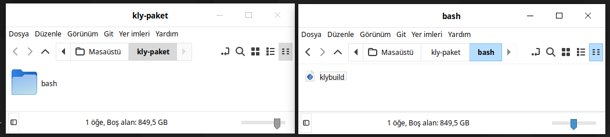
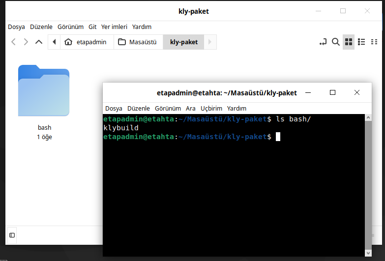
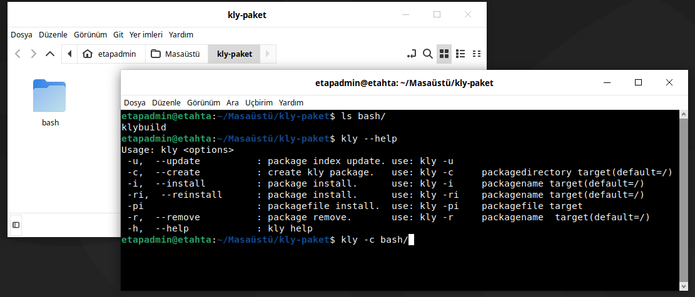
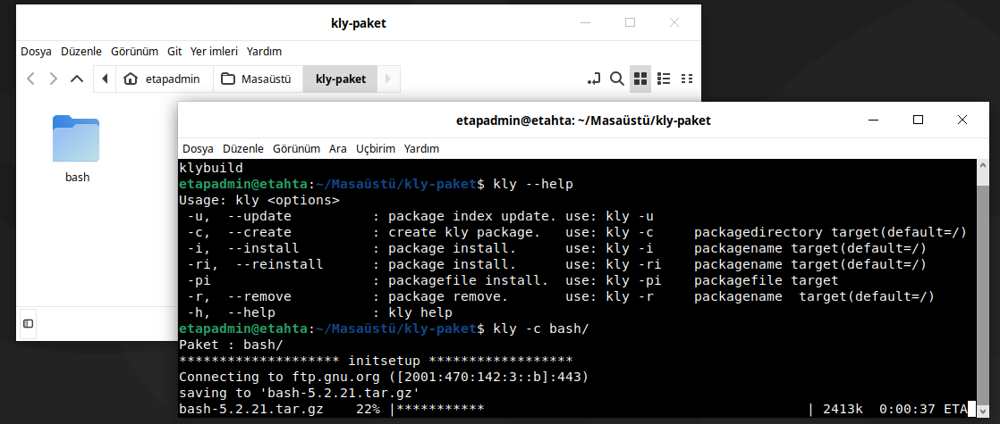
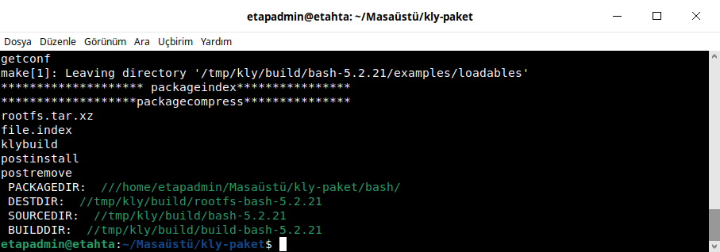
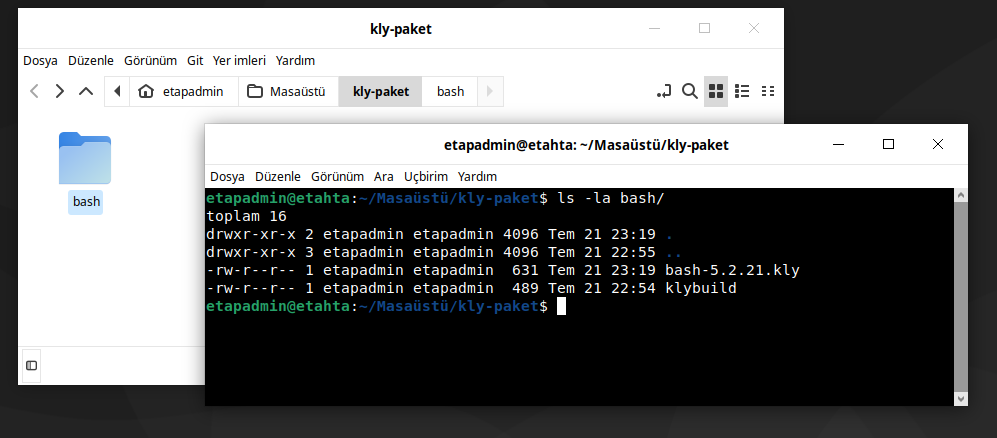

kly Paket Sistemiyle Paket Yapma¶
kly paket sistemi ile paket yapma işlemini Debian ortamında yapacağız. Debian üzerinde paket sistemimizi oluşturan scriptimiz /bin/kly konumunda olması gerekmektedir.
Şimdi bash paketinin kly Paket Sistemi'ni kullanarak derlemesini yapalım. Paket için aşağıda görüldüğü gibi masaüstüne kly-paket dizini oluşturuldu. kly-paket dizini içine bash dizini oluşturuldu. bash dizini içine klybuild dosyası oluşturuldu.
{kind=link}

klybuild dosyasının içeriğine aşağıdaki kodu ekleyiniz.
#!/usr/bin/env bash
version="5.2.21"
name="bash"
depends="glibc,readline,ncurses"
description="GNU/Linux dağıtımında ön tanımlı kabuk"
source="https://ftp.gnu.org/pub/gnu/bash/${name}-${version}.tar.gz"
groups="app.shell"
setup() {
cd $SOURCEDIR
./configure --prefix=/usr --libdir=/usr/lib64 --bindir=/bin \
--with-curses --enable-readline --without-bash-malloc
}
build() {
make
}
package() {
make install DESTDIR=$DESTDIR
cd $DESTDIR/bin
ln -s bash sh
}
klybild dosyalarında Kullanılan Değişkenler¶
ROOTBUILDDIR: /home/$user/distro/build → Derleme dizini
BUILDDIR: /home/$user/distro/build/build-${name}-${version} → Paket derleme dizini
DESTDIR: /home/$user/distro/rootfs → Yükleme dizini
PACKAGEDIR: $(pwd) → Derleme scriptinin bulunduğu dizin
SOURCEDIR: /home/$user/distro/build/${name}-${version} → Kaynak dizin
Değişkenleri derleme scripleri içinde kullanılmaktadır. Örneğin, kaynak dizinde işlem yapmak için sadece $SOURCEDIR kullanmanız yeterlidir. Bu yapılar tüm paketlerde geçerli olacak.
Not: Bazı paketlerin ek dosyaları olabilir. Derleme scripti altında Ek dosya için tıklayınız bağlantısını(link) kullanarak ek dosyaları indirin ve paketin dizini içine çıkartınız. bash paketinin ek dosyaları olsaydı bash dizini içine indiğimiz dosyayı arşivde çıkartacaktık.
kly-paket dizini konumunda aşağıdaki gibi terminal açınız.
{kind=link}

Açılan terminalde aşağıda görüldüğü gibi komutu çalıştırınız. komut hangi konumda çalıştırılmışsa .kly uzantılı pakeyimiz orada oluşacaktır. Siz istediğiniz yerde çalıştırabilirsiniz. Önemli olan paket için oluştuduğunuz klybuild dosyanınızın konumunu doğru vermeniz.
{kind=link}

Aşağıda bash dizinini parametre olarak vererek bash paketimizin derlemesini başlatıyoruz.
{kind=link}

Derleme işlemi paketin büyüklüğüne bağlı olarak zaman alacaktır. Paket derlemesi bittikten sonra aşağıda görüldüğü gibi terminal çıktısı almalısınız. Sorun çıkması durumunda terminalde hata mesajları alırsınız.
{kind=link}

Derleme işlemi bittikten sonra kly-paket/bash dizini komununda aşağıda görüldüğü gibi bash-5.2.21.kly paketimizi oluşturacaktır.
{kind=link}
